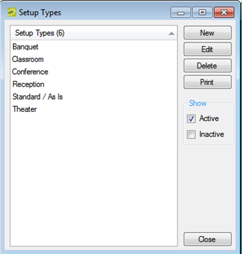

Configure Setup Types
Setup type is the physical layout or arrangement of a room, for example, classroom, conference, theater-style, rounds of 6, as-is, and so on. Setup types predefine rooms for a smoother booking process. Although configuring setup types is not required, setup type is used for defining the capacity for a room, which is helpful information for the staff at your organization who prepare rooms for an event. Also, when you configure a room, you can note, by setup type, the capacity for the room. When searching for available space, your users can use setup types and capacities to filter their search results.
- On the menu bar, click Configuration > Facilities > Setup Types. The Setup Types window opens. This window lists all the setup types that are currently configured in your database and that have a status of Active
Setup Types Window

Tip: Optionally, to view all setup types in your EMS database, regardless of status, under Show, click Inactive
- Click New. The Setup Type dialog box opens.
Setup Type Dialog Box

- In the Setup Type field, enter a name or description for the new setup type. The setup type can be a maximum of 30 characters, including spaces.
- If you want users to be able to see and request this setup type when they are searching for available space, leave Allow Everyday User Request option selected.
- Leave Inactive blank to add the setup type as an active type. Optionally, select Inactive to inactive the setup type.
- Click OK. The Setup Type dialog box closes. You return to the Setup Types window with the newly configured setup type automatically selected.